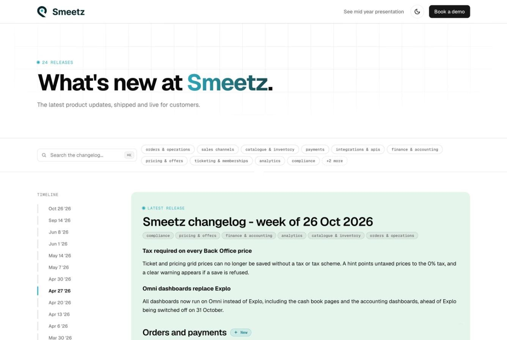
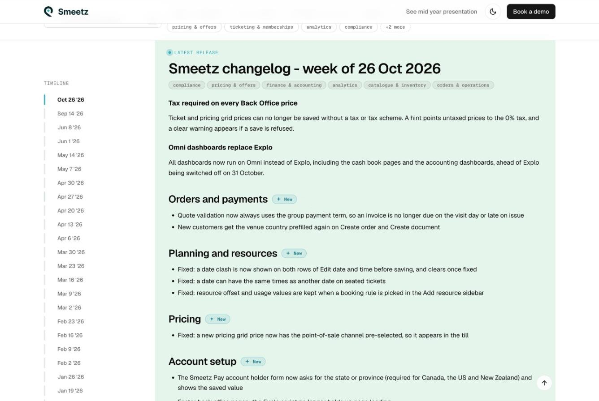
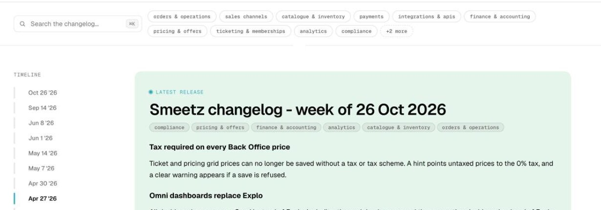
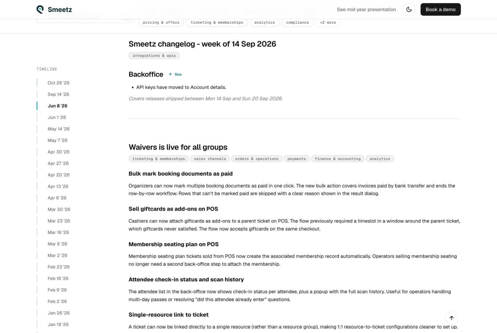
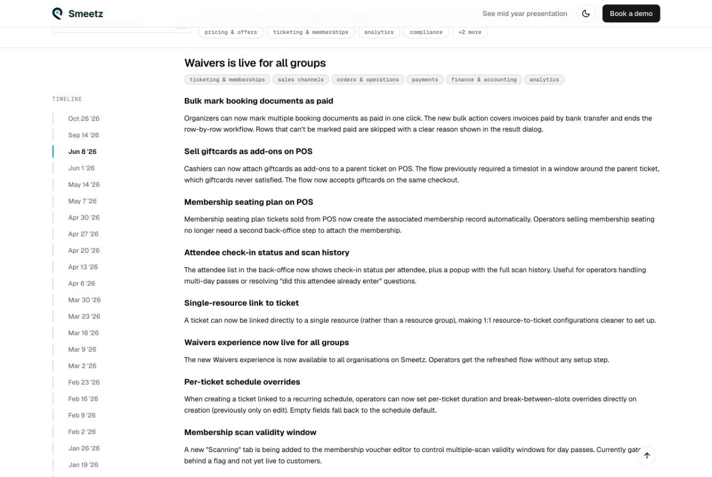
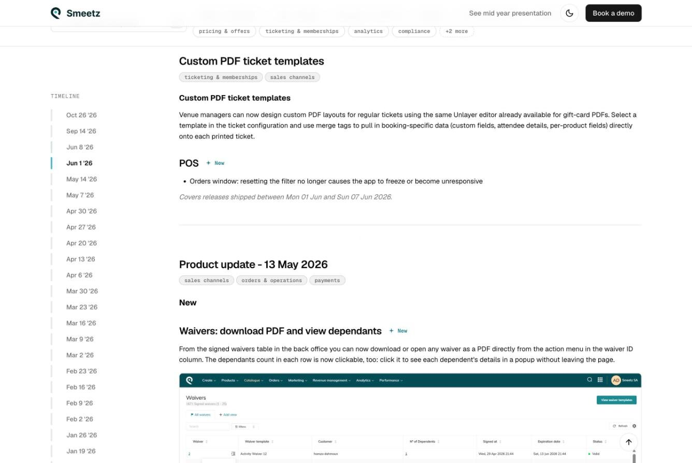

Smeetz Changelogسجل تغييرات Smeetz
I turned every weekly production release into a public changelog you can filter by product. I designed it in Figma and built it in code, and an AI release pipeline feeds it. حوّلت كل إصدار أسبوعي إلى سجل تغييرات عام يمكن تصفيته حسب المنتج. صمّمته في Figma وبنيته بالكود، وتغذّيه سلسلة إصدارات تعمل بالذكاء الاصطناعي.

Contextالسياق
Smeetz is an all-in-one ticketing and point-of-sale platform for leisure and attractions. Four product squads ship every week across more than ten apps, including the Back Office, POS, booking widget, Scanner, Kiosk, calendars and the API. Each app lives in its own repository. Smeetz منصة متكاملة للتذاكر ونقاط البيع لقطاع الترفيه والمعالم السياحية. تُطلق أربعة فرق منتج تحديثات كل أسبوع عبر أكثر من عشرة تطبيقات، منها لوحة الإدارة ونقاط البيع ونافذة الحجز والماسح والكشك والتقويمات والواجهة البرمجية. ولكل تطبيق مستودعه الخاص.
All of that work was announced in a single Intercom Help Center article, with a new header added per release. Clients, account managers and prospects had no real place to see what Smeetz was shipping. كان كل هذا العمل يُعلَن في مقال واحد في مركز مساعدة Intercom، مع إضافة عنوان جديد لكل إصدار. لم يكن للعملاء ومديري الحسابات والعملاء المحتملين مكان حقيقي لرؤية ما تُطلقه Smeetz.
Collaborationالتعاون
The changelog was a team effort. Lydia, our Product Manager and the changelog owner, led the benchmark and built the AI skills that draft each weekly entry. Product leadership and engineering decided how commits are written and how releases get into Notion. My part was what people actually see. I designed the changelog and then built it myself, from the component in our design system to the production front end, the filters and the Notion integration. كان سجل التغييرات جهدًا مشتركًا بين الفرق. قادت ليديا، مديرة المنتجات ومالكة السجل، المقارنة المرجعية وبنت مهارات الذكاء الاصطناعي التي تصوغ كل مدخل أسبوعي. حدّدت قيادة المنتج والفريق الهندسي طريقة كتابة الـcommits وانتقال الإصدارات إلى Notion. أما دوري فكان الواجهة التي يراها الناس فعلًا. صمّمت سجل التغييرات ثم بنيته بنفسي، من المكوّن في نظام التصميم إلى الواجهة الأمامية والفلاتر والربط مع Notion.
Challengeالتحدي
Every release ended up in an article that almost no client read. In practice that meant: كان كل إصدار ينتهي في مقال لا يكاد يقرؤه أي عميل. عمليًا، كان ذلك يعني:
- Hard to find. It sat behind the help center, wasn't indexed, and sales had nothing to link to. صعب الإيجاد. كان خلف مركز المساعدة، غير مفهرس، ولم يكن لدى فريق المبيعات رابط يشاركه.
- No structure. Recent releases were buried under old ones and there was no filter by product area. An operator who only cares about the POS had to scroll through everything. لا بنية. الإصدارات الحديثة مدفونة تحت القديمة، ولا فلترة حسب مجال المنتج. مشغّل نقاط البيع كان مضطرًا لتمرير كل شيء.
- No shareable link per release. Account managers ended up paraphrasing updates to clients instead of pointing them somewhere. لا رابط قابل للمشاركة لكل إصدار. انتهى الأمر بمديري الحسابات إلى إعادة صياغة التحديثات للعملاء بدل توجيههم إلى مكان واضح.
- No rhythm. Writing release notes by hand across ten repositories didn't scale, so they came out whenever someone had time. لا إيقاع. كتابة ملاحظات الإصدار يدويًا عبر عشرة مستودعات لم تكن عملية، فكانت تصدر متى توفّر الوقت.
The goal was one public changelog that comes out every week, that operators can actually read, and that's cheap enough to produce that it keeps going. الهدف كان سجل تغييرات عام واحد يصدر كل أسبوع، يستطيع المشغّلون قراءته فعلًا، وتكلفته منخفضة بما يكفي ليستمر.
Researchالبحث
Lydia led a benchmark of more than twenty changelogs, including Linear, Stripe, Notion, Raycast, Intercom, Shopify, Toast and Lightspeed. I added competitor research, like how Weezevent shares its releases in a monthly "What's new" post, plus other changelog tools we could learn from. قادت ليديا مقارنة مرجعية لـأكثر من عشرين سجل تغييرات، منها Linear وStripe وNotion وRaycast وIntercom وShopify وToast وLightspeed. وأضفت بحثًا عن المنافسين، مثل طريقة Weezevent في مشاركة إصداراتها عبر منشور شهري "ما الجديد"، إلى جانب أدوات سجلات تغييرات أخرى يمكن التعلّم منها.
Four things we noticed shaped the design:أربعة أمور لاحظناها شكّلت التصميم:
- Ship on a schedule. The best changelogs come out on a regular rhythm. Being predictable matters more than posting a lot. النشر بموعد ثابت. أفضل السجلات تصدر بانتظام. أن تكون متوقَّعًا أهم من كثرة النشر.
- One public URL. Notes hidden in a help center are hard to find. رابط عام واحد. الملاحظات المخفية في مركز المساعدة يصعب إيجادها.
- A visual for every entry. An entry with a screenshot or short video works better than text alone. صورة لكل مدخل. المدخل مع لقطة شاشة أو فيديو قصير أفضل من النص وحده.
- Few categories. New and Fixed, plus a tag for the product area. People ignore anything more detailed. تصنيفات قليلة. جديد وإصلاحات، مع وسم لمجال المنتج. الناس يتجاهلون أي تفصيل أكثر من ذلك.

Actions & Iterationsالإجراءات والتكرارات
Starting from where the content comes fromالبداية من مصدر المحتوى
The page is the last step of a longer chain. Before drawing anything, I mapped where the content comes from, because the data decides what the page can show. الصفحة هي آخر خطوة في سلسلة أطول. قبل رسم أي شيء، رسمت مصدر المحتوى، لأن البيانات هي التي تحدّد ما يمكن للصفحة أن تعرضه.
The flow end to end. The dark step is the part I designed and built.السلسلة كاملة. الخطوة الداكنة هي الجزء الذي صمّمته وبنيته.
That map gave every entry the same structure: a plain-language description per feature, an image slot, a "Where to find it" line that points to the place in the product, product-area tags, and fixes grouped by app. Since a machine writes the first draft, every part had to still work when it's empty, short or a bit wrong. منحت هذه الخريطة كل مدخل البنية نفسها: وصف بلغة بسيطة لكل ميزة، مكان لصورة، سطر "أين تجدها" يشير إلى مكانها في المنتج، وسوم لمجال المنتج، وإصلاحات مجمّعة حسب التطبيق. ولأن الآلة تكتب المسودة الأولى، كان على كل جزء أن يعمل حتى لو كان فارغًا أو قصيرًا أو فيه خطأ بسيط.
Starting in the design systemالبداية من نظام التصميم
I designed the changelog building blocks as an asset in Storybook, inside our new design system, instead of as a one-off page. That kept it consistent with the rest of Smeetz and gave me ready-made components to build with later. صمّمت عناصر سجل التغييرات كأصل في Storybook داخل نظام التصميم الجديد، بدل صفحة منفردة. حافظ ذلك على اتساقه البصري مع بقية Smeetz، ومنحني مكوّنات جاهزة للبناء لاحقًا.


From mockup to production, without a handoffمن النموذج إلى الإنتاج، دون تسليم
The team had no front-end capacity to spare for this, so rather than wait for a sprint slot, I built it myself with Claude Code. We debated hosting it inside the existing developer portal, which was already deployed and had components ready. I chose a standalone repository instead, so the changelog could move at its own pace without touching a product other teams depend on. لم تكن لدى الفريق قدرة إضافية على الواجهات الأمامية لهذا المشروع، فبدل انتظار مكان في السبرينت، بنيته بنفسي باستخدام Claude Code. ناقشنا استضافته داخل بوابة المطوّرين الموجودة، التي كانت منشورة ولديها مكوّنات جاهزة. اخترت مستودعًا مستقلًا بدلًا من ذلك، كي يتحرك سجل التغييرات بإيقاعه الخاص دون المساس بمنتج تعتمد عليه فرق أخرى.
Because I was working in code, I could polish the details directly. I tuned interactions, spacing and states in the browser instead of describing them in a spec. ولأنني كنت أعمل بالكود، استطعت صقل التفاصيل مباشرة. ضبطت التفاعلات والمسافات والحالات في المتصفح بدل وصفها في مستند.

Filtering by product areaالفلترة حسب مجال المنتج
The biggest complaint about the old article was that everyone got the same wall of text. I added filtering by product area, so a venue that only uses the POS sees only POS changes. Before launch, we tested the filters on more real entries to make sure the grouping still worked with messy data. كانت أكبر شكوى من المقال القديم أن الجميع يتلقّى الكتلة النصية نفسها. أضفت الفلترة حسب مجال المنتج، فيرى مكان يستخدم نقاط البيع فقط تغييرات نقاط البيع فقط. قبل الإطلاق، اختبرنا الفلاتر على مدخلات حقيقية أكثر للتأكد من أن التجميع يصمد أمام بيانات حقيقية غير مرتّبة.

Moving the source from Intercom to Notionنقل المصدر من Intercom إلى Notion
The first version read articles from Intercom. Midway, Lydia moved the drafting pipeline to Notion, where PMs already worked. I rewired the site to read the Smeetz Changelog Entries database instead, and made the review status the publishing switch: the site renders only entries marked Published, newest week first. Drafts and reviewed entries stay invisible until a human approves them.
كانت النسخة الأولى تقرأ المقالات من Intercom. في منتصف الطريق، نقلت ليديا سلسلة الصياغة إلى Notion، حيث يعمل مديرو المنتجات أصلًا. أعدت ربط الموقع ليقرأ قاعدة بيانات Smeetz Changelog Entries بدلًا من ذلك، وجعلت حالة المراجعة هي مفتاح النشر: لا يعرض الموقع إلا المدخلات المعلَّمة Published، الأحدث أولًا. تبقى المسودات والمدخلات المراجَعة مخفية حتى يوافق عليها إنسان.
Why it mattered later: in August, the drafting skill silently broke for nine weeks. When it was fixed, all nine weeks were backfilled as drafts. Because publishing depends on status, nothing half-finished reached clients while the team curated them. لماذا كان ذلك مهمًا لاحقًا: في أغسطس، توقّفت مهارة الصياغة بصمت لتسعة أسابيع. عند إصلاحها، أُعيد ملء الأسابيع التسعة كمسودات. ولأن النشر يعتمد على الحالة، لم يصل أي شيء غير مكتمل إلى العملاء بينما كان الفريق يراجعها.
Resultsالنتائج
The changelog went public at the end of June 2026 and has been updated every week since. أصبح سجل التغييرات عامًا نهاية يونيو 2026، ويُحدَّث كل أسبوع منذ ذلك الحين.



Things I Learned · Takeaway & Reflectionما تعلّمته · خلاصة وتأمّل
- Building it myself sped up decisions. Showing stakeholders a working site in their browser ended discussions that a Figma file would have dragged out. With no handoff, there was a lot less waiting. بناؤه بنفسي سرّع القرارات. عرض موقع يعمل في متصفح أصحاب القرار أنهى نقاشات كان ملف Figma سيطيلها. ومن دون مرحلة تسليم، قلّ الانتظار كثيرًا.
- If AI writes the content, expect it to be imperfect. Missing images, short descriptions and half-finished features happen all the time, so the design has to handle them. The review status ended up being part of the interface too. إن كان الذكاء الاصطناعي يكتب المحتوى، فتوقّع ألا يكون مثاليًا. الصور الناقصة والأوصاف القصيرة والميزات غير المكتملة تحدث باستمرار، فلا بد أن يتعامل التصميم معها. وأصبحت حالة المراجعة جزءًا من الواجهة أيضًا.
- Keep the data source easy to swap. The source changed halfway through the project. Because the page was separate from where the content lives, I only had to reconnect it instead of rebuilding it. اجعل مصدر البيانات سهل التبديل. تغيّر المصدر في منتصف المشروع. ولأن الصفحة منفصلة عن مكان المحتوى، اكتفيت بإعادة ربطها بدل إعادة بنائها.
Impactالأثر
- Replaced a buried help article with a public, filterable changelog that clients, account managers and prospects can actually find and share. استبدال مقال مساعدة مدفون بسجل تغييرات عام وقابل للتصفية يمكن للعملاء ومديري الحسابات والعملاء المحتملين إيجاده ومشاركته.
- Gave the company a way to show its work. The H1 2026 season, 79 features across 7 product areas, was presented to the whole company as an exhibition on the changelog site. منح الشركة طريقة لعرض عملها. قُدّم موسم النصف الأول من 2026، أي 79 ميزة عبر 7 مجالات منتج، للشركة كلها كمعرض على موقع سجل التغييرات.
- Sales started using it. The sales team built its client-facing "What's new" page and email kit from the weekly changelog drafts. بدأ فريق المبيعات يستخدمه. بنى فريق المبيعات صفحة "ما الجديد" الموجّهة للعملاء وحزمة الرسائل البريدية من مسودات السجل الأسبوعية.
- It became our example. We now point to the changelog to show what a small team can ship when the same person designs and builds. أصبح مثالًا نستشهد به. صرنا نشير إلى سجل التغييرات لنُظهر ما يمكن لفريق صغير إطلاقه حين يصمّم الشخص نفسه ويبني.